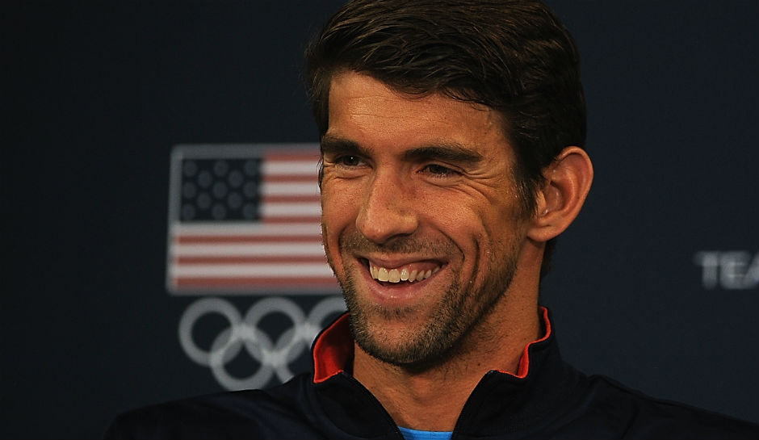

BIOGRAFIA
Michael Fred Phelps II (Baltimore, 30 de junho de 1985) é um ex-nadador norte-americano, conquistou trinta e sete recordes mundiais e conquistou o maior número de medalhas de ouro (nove) olímpicas em uma única edição, feito este realizado nos Jogos de Pequim, na China, em agosto de 2008. Diante dos seus resultados, Phelps superou as oito medalhas de ouro do compatriota Mark Spitz conquistadas nos Jogos Olímpicos de Munique, em 1972.
Ao obter a sua 19ª medalha olímpica nos Jogos de Londres 2012, tornou-se o atleta mais medalhado da história dos Jogos Olímpicos, batendo o recorde anterior que pertencia a Larissa Latynina, ginasta da União Soviética, que detinha um total de dezoito. Ao ganhar a prova dos 200 metros estilos, nos Jogos Olímpicos de 2012, tornou-se o primeiro nadador do mundo a conquistar o titulo olímpico, três vezes consecutivas na mesma especialidade a nível individual, feito que já tinha realizado em prova coletiva, a estafeta 4 x 200 metros livres.
Anunciou sua retirada após a participação nos Jogos Olímpicos de 2012, a quarta Olimpíada de sua carreira, porém, anunciou sua volta às competições em 2014. Nos Jogos de 2016, ao ganhar o ouro no revezamento 4x200m livre, mesmo participando de um esporte individual, Phelps se tornou o maior medalhista olímpico por equipes, deixando para trás a também nadadora norte-americana Jenny Thompson, que conquistou oito ouros por equipes. Só com os ouros nos revezamentos, Phelps seria o maior medalhista dourado olímpico. Ainda nos Jogos de 2016, com a vitória nos 200m borboleta, tornou-se o nadador mais velho (31 anos e 40 dias) a ganhar uma medalha de ouro olímpica em provas individuais da natação, quebrando uma marca que existia desde os Jogos de 1920. Com isto, Michael Phelps bateu todos os recordes que tinha a bater.